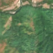
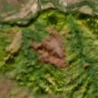

8,5 ha · Pietroasa
văzută schimbată prima dată pe 2 sept. 2026


Nu am găsit nicio autorizație de tăiere în jur.
Ce se vede în poze: În «poza detaliată» zona marcată este acoperită de coronamentul dens al unei păduri închise. În «după» apare o suprafață mare maro-roșcată, fără verdeață, unde pădurea a dispărut, ceea ce arată tăiere sau doborâturi de vânt.
în arie protejată: Parcul Natural Apuseni, Apuseni, Munții Apuseni - Vlădeasa